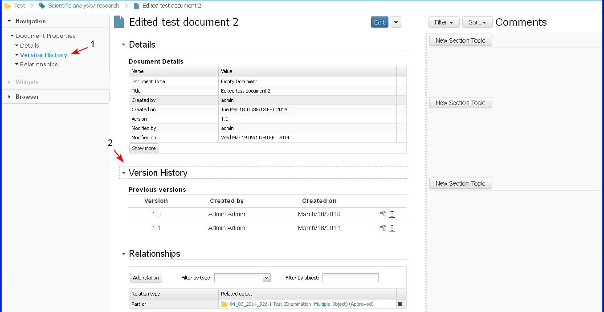

- To view an iDoc the user clicks the link to the document (1-2). (Everywhere in the system - dashlets, search results, etc. An iDoc is represented as an icon, ID and title which are a hyperlink to the document.)

The system opens the document in preview mode. The screen is divided into three parts:
- Document Tree View (1) - the user could only browse the document structure and open different sections of the document for preview. (no actions on the sections are allowed)
- Document Content (2) - the user could only review the document content and could not change it.
- Document Comments (3) - the user could view and reply to existing comments

In the Document tree view section the user could:
- see the tree structure of the document - the titles of the sections and their subsections, etc.
- browse the document content - the user could click on a section in the tree and the respective section is displayed in the document content.
- Planned: view some other sections like:
- Document in hierarchy - in this section the user could review the document if it is in parent-child relationship with other documents.
- Document relationships - in this section the user could review all objects with which the document is in relationship (the same as the Relationships section in the document content).
In the Document content part of the document:
- The user could only review the content and could not change it
- The Widgets Palette and the Free Text Editor are inactive
- If there are links to other document or objects in the document content, those links are active and the user could select them and open the selected object for review. Some actions on these objects could also be performed.
- In the Title section of the document (this is the section in which is visible the document ID, Title and Creator) there is a list with actions that the user could perform on the iDoc as an Object (Delete, Move, Clone, Publish, Comment etc).
- Next to the Document section is the "Add Comment" field and each user could comment on the section details.
(For more details on commenting on a section see Comment on 1st Class Objects use cases - Comment functionality is the same for each object in the system)
In the Comments part of the screen the user could;
- review all comments on the document or on the section
- could reply to a comment
- could search and filter the comments.
(For more details on commenting on a section see Comment on 1st Class Objects use cases - comment functionality is the same for each object in the system)
- If the user clicks on a section name (1) in the document tree view, then:
- the section title in the document tree becomes bold (1).
- the section content is displayed to the user and the section title field is highlighted (2).

- If the user clicks on a section in the document pane, then:
- the section title field in the document body pane is highlighted
- the section title in the document tree becomes bold